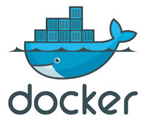
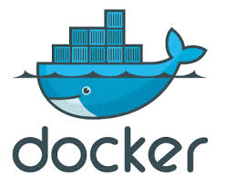

What is going on here?
- Node application / React.js UI (~ 100 loc each)
- 10 node processes - all communicating with each other through websockets
- (this simulates the grid plugin system)
- the server also communicates to our React dashboard over websockets
- This application was packaged into a docker container image
- The container is pushed to a private docker image repository
- A docker capable instance was provisioned on AWS (new virtual machine)
- The application container was deployed into this machine

 
